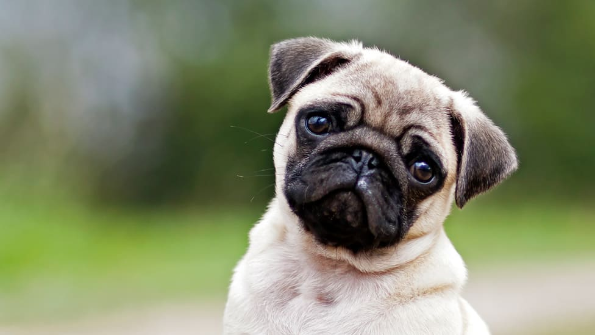
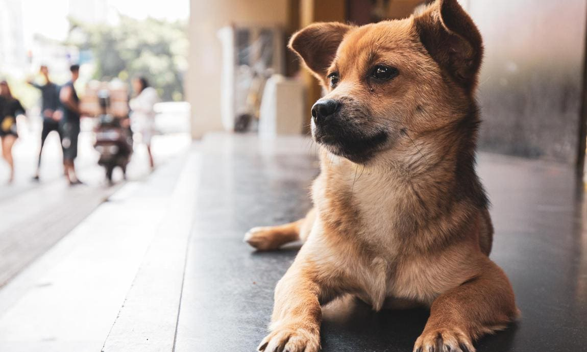

Aca vas a encontrar lugares en donde puedas conseguir un nuevo integrante para tu familia, recorda que al adoptar un perro no solo vas a conseguir un nuevo amigo sino que tambien vas a salvarle la vida a un ser tan bueno como son los perros. Es el animal mas fiel y amoroso que vas a poder conseguir, no vas a estar nunca solo. Va a cuidar a tu familia asi como esperamos que tambien lo cuides a el.
No compres, ¡adopta! Cientos de amigos esperan en calles y refugios una oportunidad. Pagar por un animal es aceptar que las vidas tienen un precio. Y que, por tanto, los seres vivos pueden comprarse (y poseerse). Cada vez que un vendedor ofrece una vida a cambio de dinero, la objetiviza. Por eso, pagar por un animal también equivale a considerar como algo a quien es alguien.
De los criaderos de perros y gatos a las tiendas de mascotas, donde roedores, peces o reptiles permanecen encerrados en vitrinas y jaulas a la espera de un hogar, pasando por el comercio de aves exóticas o de caballos, la venta de animales no humanos dentro del escenario capitalista se vale del especismo para lucrarse y antepone el negocio a la existencia; dominándola, mercantilizándola, esclavizándola.
Cuando compras, un perro de refugio morirá. Cerca de la mitad de los millones de perros que se encuentran en refugios cada año, se les debe aplicar la eutanasia por la falta de buenos hogares. Comprar en criaderos destruye las posibilidades de que un perro en un refugio viva y sienta lo que es ser parte de una familia amorosa. Otros millones de perros mueren en las calles, a veces tras ser rechazados por un refugio “no eutanásico” con su capacidad colmada. “No nacer” es la solución. La única manera real, sustentable y humanitaria para que las comunidades terminen con la eutanasia en animales sanos en los refugios, es cortar el ingreso de animales sin hogar. Ahí es donde entras tú.
Una vez que estás listo para traer un perro a tu vida, es una oportunidad para darle a un individuo, quien pudo haber sido descuidado o abandonado, una segunda oportunidad en la vida. Tal vez a alguien le regalaron un perro y perdió interés una vez que pasó la novedad. O tal vez la familia se mudó y dejó al perro. O tal vez tuvieron hijos y se dieron cuenta que ya no les importaba el perro. Tú puedes lograr que un perro se sienta amado, cuidado y a salvo nuevamente (o por primera vez) y tu vínculo con él será inquebrantable.
Si quieres un cachorro, un perro de un tamaño determinado, o uno que es “hipoalergénico”, puedes encontrar uno para adoptarlo. Si te preocupa su temperamento, puedes darle un hogar temporal antes de comprometerte a adoptarlo. Si estás decidido a tener un perro de una raza determinada, pasa al punto número 8, y ten en cuenta que uno de cada cuatro perros en los refugios es “de raza” y que hay grupos de rescate que tratan de encontrarles hogares a perros de casi todas las razas. Pero cada perro es un individuo, no los juzgues por su apariencia.